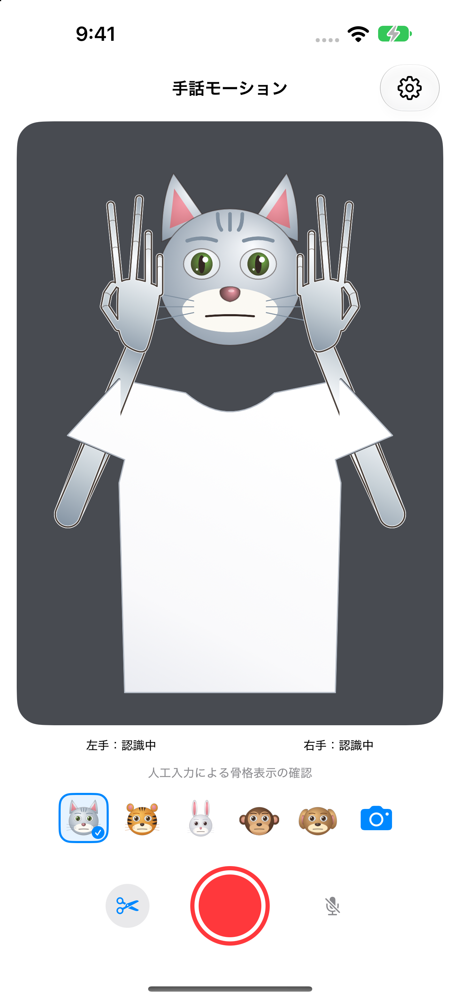

顔から指先まで
まばたき、ウインク、眉・頬・口の動きを動物の顔に反映し、手のひら・指・腕は動物の色と陰影、指の境界線で表示し、服は白く塗ります。
iPhone・iPad
手話モーションは、顔・上半身・両手の動きを端末内で認識し、5種類の2D動物の顔、色と陰影を合わせた手・腕と白く塗ったTシャツで表示するアプリです。
使い方とサポート
まばたき、ウインク、眉・頬・口の動きを動物の顔に反映し、手のひら・指・腕は動物の色と陰影、指の境界線で表示し、服は白く塗ります。
カメラ映像を開発者のサーバーへ送信しません。アカウント登録も不要です。
アバターのMP4録画には実写を含みません。音声は設定で選べます。自分で選んだ動画の字幕・トリミング編集もできます。
iOS／iPadOS 18以降のiPhone・iPadに対応します。
カメラは30fps・60fpsから選べます。非対応の組み合わせや負荷が高いときは対応する低い速度で動作します。保存動画は60fps設定ですが、毎秒60回の新しい認識結果を保証するものではありません。認識が遅れた場合は直前の骨格を再使用します。
精密な舌の認識、感情の判定、手話の分類・翻訳、本人認証、医療目的の測定は行いません。